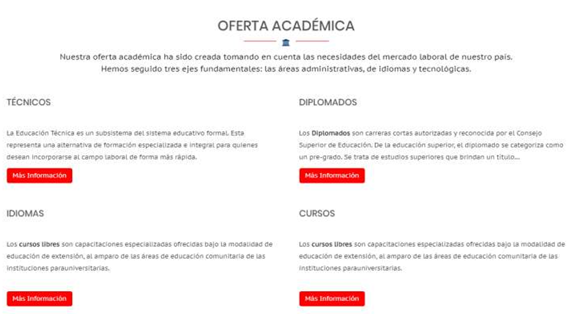

Diagramación sección interactiva
Una página web con una sección interactiva de cuatro botones. Debe tener
un título y un párrafo. Agrandar el tamaño del título principal. La
información textual puede ser diferente, pero utilizando la misma
diagramación. Al dar clic a cada botón debe enlazar la web de la U en una
pestaña diferente del navegador. https://ucenfotec.ac.cr/

Ir al reto